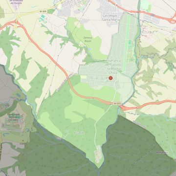

Santa María Soledad Torres Acosta
- Arciprestazgo
- Villaviciosa de Odón
- Población
- Villanueva de la Cañada
- Dirección postal
- c/ Valle de Esteribar, 1 (Villafranca del Castillo)
- Código postal
- 28692
- Extensión
- 7,43 km² (743 ha)
- Teléfono
- 918 152 857
- Correo electrónico
- soledadtorresacosta-villanuevadelacanada@diocesisgetafe.es


Descargar mapaLímites según decreto
“Partiendo de la confluencia del río Aulencia con el río Guadarrama, arrancan por el límite de los términos municipales de Villanueva de la Cañada-Boadilla del Monte (en dirección noreste); siguen por el límite de los términos municipales de Villanueva de la Cañada-Majadahonda (en dirección noreste), por el límite de los términos municipales de Villanueva de la Cañada-Villanueva del Pardillo (en dirección suroeste) y por el río Aulencia hasta la confluencia con el río Guadarrama, punto de partida” (Decreto de rectificación de límites, B.O., Junio-2007, pág. 716)